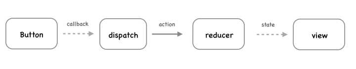
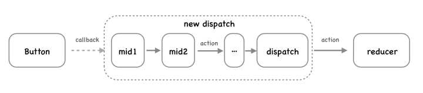

# 一、前言
- 在
redux里，middleware是发送action和action到达reducer之间的第三方扩展，也就是中间层。也可以这样说，middleware是架在action和store之间的一座桥梁 - 在
redux里，action仅仅是携带了数据的普通js对象
Reducer拆分可以使组件获取其最小属性(state)，而不需要整个Store。中间件则可以在Action Creator返回最终可供dispatch调用的action之前处理各种事情，如异步API调用、日志记录等，是扩展Redux功能的一种推荐方式
Redux提供了applyMiddleware(...middlewares)来将中间件应用到createStore。applyMiddleware会返回一个函数，该函数接收原来的creatStore作为参数，返回一个应用了middlewares的增强后的creatStore
export default function applyMiddleware(...middlewares) {
return (createStore) => (reducer, preloadedState, enhancer) => {
//接收createStore参数
var store = createStore(reducer, preloadedState, enhancer)
var dispatch = store.dispatch
var chain = []
//传递给中间件的参数
var middlewareAPI = {
getState: store.getState,
dispatch: (action) => dispatch(action)
}
//注册中间件调用链
chain = middlewares.map(middleware => middleware(middlewareAPI))
dispatch = compose(...chain)(store.dispatch)
//返回经middlewares增强后的createStore
return {
...store,
dispatch
}
}
}
未应用中间价之前，创建
store的方式如下
import {createStore} from 'redux';
import reducers from './reducers/index';
export let store = createStore(reducers);
应用中间价之后，创建
store的方式如下
import {createStore，applyMiddleware} from 'redux';
import reducers from './reducers/index';
let createStoreWithMiddleware = applyMiddleware(...middleware)(createStore);
export let store = createStoreWithMiddleware(reducers);
# 二、为什么要引入middleware
action creator返回的值是这个action类型的对象。然后通过store.dispatch()进行分发
action ---> dispatcher ---> reducers
如果遇到异步情况，比如点击一个按钮，希望2秒之后更新视图，显示消息“Hi”。我们可能这么写
ActionCreator
var asyncSayActionCreator = function (message) {
setTimeout(function () {
return {
type: 'SAY',
message
}
}, 2000)
}
这会报错，因为这个
asyncSayActionCreator返回的不是一个action，而是一个function。这个返回值无法被reducer识别
- 也就是说，正常来说，
action返回的是一个对象，而不是一个函数。如果返回函数，会出现错误 - 而异步操作呢，需要
action的返回值是一个函数。那么咋办呢，所以需要引入中间件middleware,它在中间起到了桥梁的作用，让action的返回值可以是一个函数，从而传到reducer那里。也就是说，中间件是用在action发起之后，reducer接收到之前的这个时间段 - 也可以这么说，
Middleware主要是负责改变Store中的dispatch方法，从而能处理不同类型的action输入，得到最终的Javascript Plain Object形式的action对象
因此，上面那个
ActionCreator就可以改写为这样：因为action的返回值是一个函数
var asyncSayActionCreator = function (message) {
return function (dispatch) {
setTimeout(function () {
dispatch({
type: 'SAY',
message
})
}, 2000)
}
}

- 上图表达的是
redux中一个简单的同步数据流动的场景，点击button后，在回调中dispatch一个action，reducer收到action后，更新state并通知view重新渲染

上面这张图展示了应用
middleware后
redux处理事件的逻辑，每一个
middleware处理一个相对独立的业务需求，通过串联不同的
middleware，实现变化多样的的功能。那么问题来了：
middleware怎么写？redux是如何让middlewares串联并跑起来的？
# 三、中间件是如何工作的
Middleware`的中间件有很多，不过我的这个案例只引用了其中的一个，那就是`redux-thunk
redux-thunk源码如下
export default function thunkMiddleware({ dispatch, getState }) {
return next => action =>
typeof action === 'function' ?
action(dispatch, getState) :
next(action);
}
意思是如果
action是一个函数，执行这个action函数，如果不是函数，执行next函数
# 四、自定义中间件
中间件的签名如下
({ getState, dispatch }) => next => action
根据
applyMiddleware源码，每个中间件接收getState & dispatch作为参数，并返回一个函数，该函数会被传入下一个中间件的 dispatch 方法，并返回一个接收action的新函数
- 应用多个中间件时，中间件调用链中任何一个缺少
next(action)的调用，都会导致action执行失败
function callTraceMiddleware ({dispatch,getState}){
return next=> action =>{
console.trace();
return next(action);
}
}
- 然后在调用中间件部分添加中间件
const createStoreWithMiddleware = applyMiddleware(
thunkMiddleware,
loggerMiddleware,
callTraceMiddleware
)(createStore);
redux的middleware是对action进行扩展处理，这样丰富了应用需求